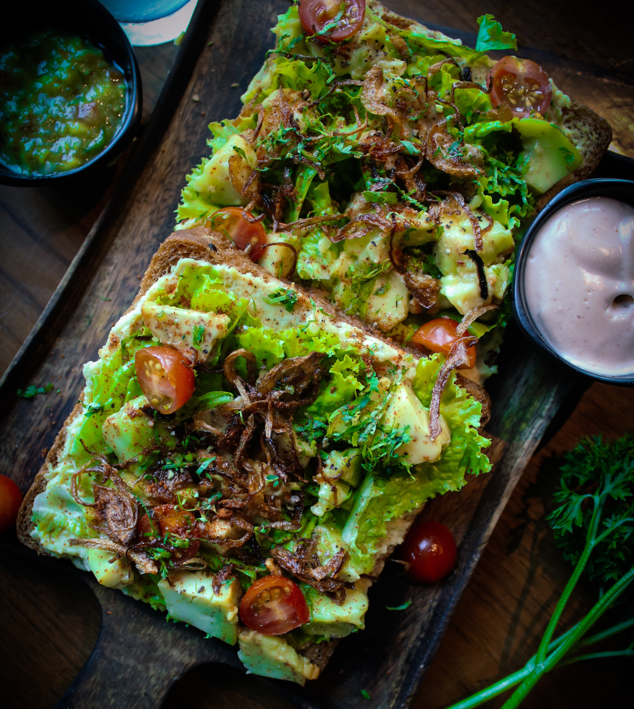

Return to Recipes
Avocado Toast

Ingredients
- 4 slices whole-grain bread
- 1 avocado, halved and pitted
- 2 tablespoons chopped fresh parsley
- 1 ½ teaspoons extra-virgin olive oil
- ½ lemon, juiced
- ½ teaspoon salt
- ½ teaspoon ground black pepper
- ⅓ teaspoon onion powder
- ⅔ teaspoon garlic powder
Directions
- Toast bread in a toaster or toaster oven.
- Scoop avocado into a bowl.
- Add parsley, olive oil, lemon juice, salt, pepper, onion powder, and garlic powder.
- Mash together using a potato masher.
- Spread avocado mixture into each piece of toast.